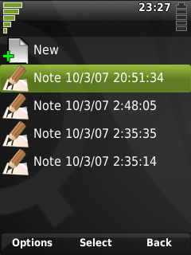

|
Home · All Namespaces · All Classes · Grouped Classes · Modules · Functions | |
Files:
The Notes application tutorial shows how to use a QDocumentSelector and a QTextEdit to create a simple text editing application. It also demonstrates using a QStackedLayout to switch between widgets, and using a QContent to read and write a user document.

The Notes application displays a list of text documents which can be edited starting with a new document selection. When a document is selected the display switches to a text editor with the contents of the document. Exiting the editor will return the application to the documents list, if the editor was not canceled the changes to the document are saved.
class NotesDemo : public QDialog
{
Q_OBJECT
public:
NotesDemo( QWidget *parent = 0, Qt::WindowFlags flags = 0 );
public slots:
virtual void done( int result );
private slots:
void newDocument();
void openDocument( const QContent &document );
private:
bool readContent( QTextDocument *document, QContent *content );
bool writeContent( QTextDocument *document, QContent *content );
QStackedLayout *layout;
QDocumentSelector *documentSelector;
QTextEdit *editor;
QContent currentDocument;
};
The NotesDemo class inherits from the QDialog class, we inherit from a QDialog instead of a QWidget in this case so we can override the QDialog::done() slot and use it to navigate back from the editor to the document selector.
There are two private slots: newDocument() and openDocument() which are connected to the document selector and are called when the user makes a selection. We then have some private methods for reading (readContent()) and writing (writeContent()) the selected documents.
In the constructor we first construct a QDocumentSelector, setting it to display only documents with the MIME type text/plain, sorted in reverse chronological order so the most recently edited documents appear first.
NotesDemo::NotesDemo( QWidget *parent, Qt::WindowFlags flags )
: QDialog( parent, flags )
{
documentSelector = new QDocumentSelector;
documentSelector->setFilter( QContentFilter::mimeType( "text/plain" ) );
documentSelector->setSortMode( QDocumentSelector::ReverseChronological );
Next we want to display the 'New' document selection at the start of the documents list and in the context menu, we do this by enabling the QDocumentSelector::NewDocument option.
documentSelector->enableOptions( QDocumentSelector::NewDocument );
Then we want to connect to the signals emitted by QDocumentSelector when documents are selected.
connect( documentSelector, SIGNAL(newSelected()),
this, SLOT(newDocument()) );
connect( documentSelector, SIGNAL(documentSelected(QContent)),
this, SLOT(openDocument(QContent)) );
Finally we construct the QTextEdit widget and add both widgets to a new layout. We use a QStackedLayout here so that only one of the two widgets is ever visible at once, the QDocumentSelector is added first so it will be visible initially.
editor = new QTextEdit;
layout = new QStackedLayout( this );
layout->addWidget( documentSelector );
layout->addWidget( editor );
}
The newDocument() slot is called when a user chooses to create a new document. We respond to this by creating a new QContent with the type text/plain and a name based on the current date/time, setting it as the current document and then displaying the QTextEdit. At this point the QContent has just been initialized, we'll wait until the user has edited the document before saving anything to the document system.
void NotesDemo::newDocument()
{
currentDocument = QContent();
currentDocument.setName( "Note " + QTimeString::localYMDHMS( QDateTime::currentDateTime() ) );
currentDocument.setType( "text/plain" );
layout->setCurrentWidget( editor );
}
The openDocument() slot is called when a user selects an existing document. In this case we set the selected document as the current document and attempt to read the text from it. Only if the read succeeds will we display the QTextEdit with the document text.
void NotesDemo::openDocument( const QContent &document )
{
currentDocument = document;
if ( readContent( editor->document(), ¤tDocument ) ) {
layout->setCurrentWidget( editor );
}
}
When the user closes the QTextEdit we want to go back to the QDocumentSelector, saving the changes made if the dialog was accepted. To do this we override the QDialog::done() slot.
void NotesDemo::done( int result )
{
if ( layout->currentWidget() == editor ) {
If the QTextEdit was accepted attempt to write it's contents to the current document. If the write is successful then we'll commit our changes to the current document to the document system.
if ( result == QDialog::Accepted ) {
if ( !writeContent(editor->document(), ¤tDocument ) ) {
qWarning() << "Writing the content failed";
} else if ( !currentDocument.commit() ) {
qWarning() << "Committing the new content failed";
}
}
Then saved or not we clear the QTextEdit and return to the QDocumentSelector.
editor->document()->clear();
layout->setCurrentWidget( documentSelector );
If the QDocumentSelector is the currently visible widget then we want the QDialog to perform it's usual response to the done() slot and close.
} else {
QDialog::done( result );
}
}
To read the contents of a text document we request a new read only QIODevice from QContent::open(), if the document could not be opened a null pointer is returned instead.
bool NotesDemo::readContent( QTextDocument *document, QContent *content )
{
QIODevice *ioDevice = content->open( QIODevice::ReadOnly );
if ( !ioDevice ) {
qWarning() << "Could not open the new content object to read from!!";
return false;
}
QByteArray bytes = ioDevice->readAll();
document->setPlainText( QString::fromAscii( bytes ) );
The caller takes ownership of the QIODevice returned by QContent::open() so when we're done we need to close the QIODevice and delete it.
ioDevice->close();
delete ioDevice;
return true;
}
We can also write to a document using an QIODevice returned by QContent::open(). If the QContent does not belong to an existing document but has a valid name and type assigned (as is the case with the current document following a call to newDocument()) a new document will be created for the QContent when it's opened in write mode.
bool NotesDemo::writeContent( QTextDocument *document, QContent *content )
{
QIODevice *ioDevice = content->open( QIODevice::WriteOnly );
if ( !ioDevice ) {
qWarning() << "Could not open the new content object to write to!!";
return false;
}
int bytesWritten = ioDevice->write( document->toPlainText().toAscii() );
ioDevice->close();
delete ioDevice;
if ( bytesWritten < 0 ) {
qWarning() << "Error while trying to create a new notes object!!";
return false;
} else {
return true;
}
}
Instead of QContent::open() we could also have used the QContent::load() and QContent::save() methods to read and write the documents.
To install and run the Notes demonstration, carry out the following steps.
mkdir $HOME/src/notesdemo
cd $HOME/src/notesdemo
cp -r <Qt-Extended-source-directory>/examples/content/notesdemo/* .
chmod +w *
export QPEDIR=<Qt-Extended-build-directory>
$QPEDIR/bin/qbuild
$QPEDIR/bin/qbuild image
$QPEDIR/bin/runqtopia
| Copyright © 2009 Trolltech | Trademarks | Qt Extended 4.4.3 |